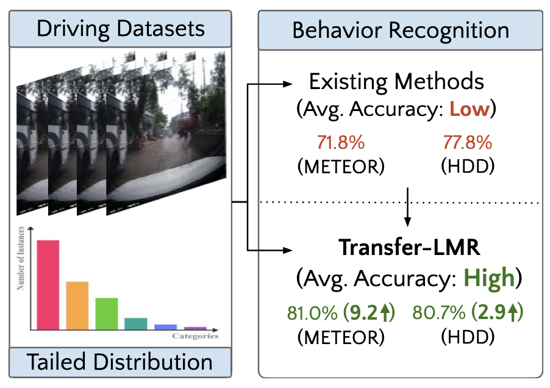
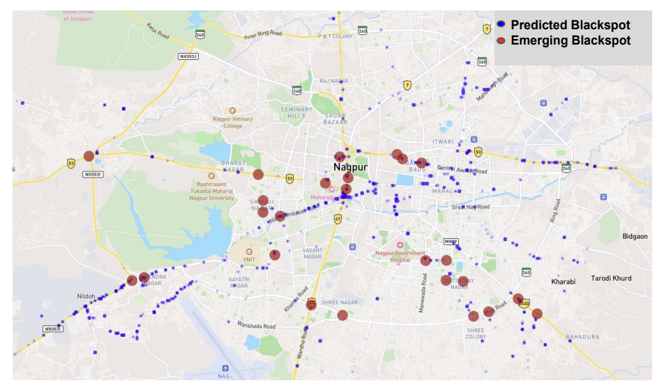
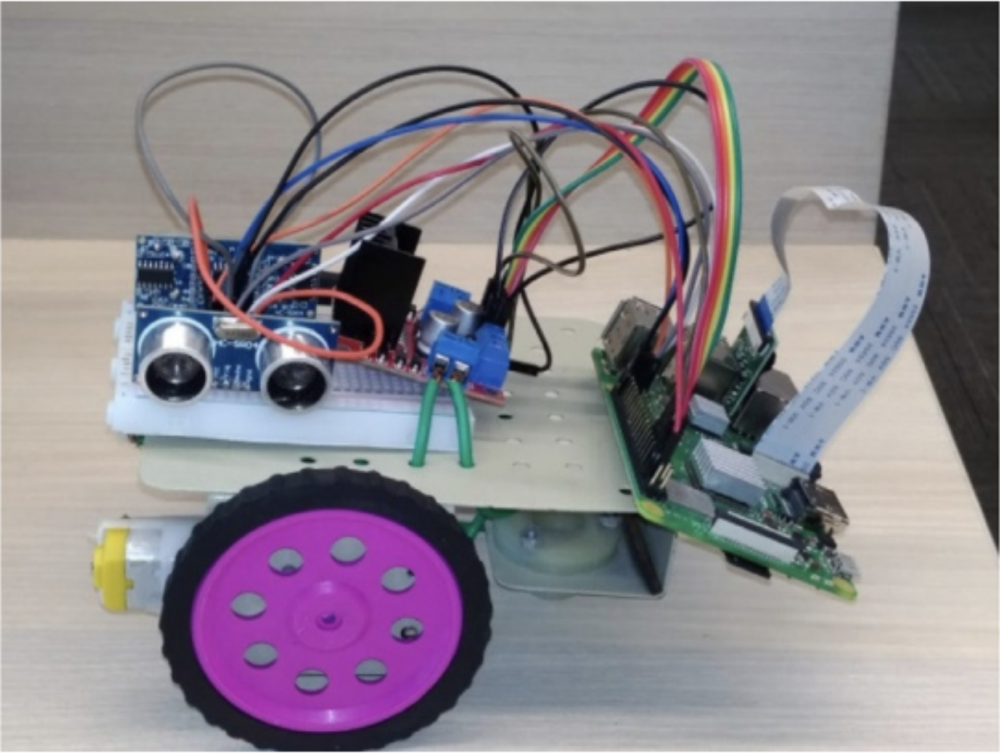

|
Ravi Shankar Mishra Hi! I am a final-year MS (by Research) student in the CVIT lab at IIIT Hyderabad, advised by Prof. C.V. Jawahar, Dr. Ravi Kiran S., and Dr. Anbumani Subramanian. My Thesis topic is "Predictive Modeling of Accident-Prone Road Zones and Action Recognition in Unstructured Traffic Scenarios using ADAS Systems at Population Scale" . Prior to this, I worked as an Applied Research Engineer at IHub-Data, contributing to "Project iRASTE," which aimed at enhancing intelligent road safety systems. I also worked as a Research Intern at Bennett University under the guidance of Dr. Deepak Garg and Dr. Gaurav Singal. |

|
ResearchI am passionate about advancing vision-language tasks, multimodal systems, embodied AI, and diffusion models. My goal is to develop intelligent systems with multimodal sensing, spatio-temporal reasoning, and natural language generation capabilities. |

|
IDD-CRS: A Comprehensive Video Dataset for Critical Road Scenarios in Unstructured Environments
Ravi Shankar Mishra, Anbumani Subramanian, CV Jawahar, Ravi Kiran Sarvadevabhatla arXiv, 2024 project page / arXiv Raytracing constant-density ellipsoids yields more accurate and flexible radiance fields than splatting Gaussians, and still runs in real-time. |
|  |
Transfer-LMR: Heavy-Tail Driving Behavior Recognition in Diverse Traffic Scenarios
Chirag Parikh, Ravi Shankar Mishra, Rohan Chandra, Ravi Kiran Sarvadevabhatla, arXiv We present a large RGB-D dataset of indoor scenes and investigate ways to improve object detection using depth information. |
|  |
Enhancing Road Safety: Predictive Modeling of Accident-Prone Zones with ADAS-Equipped Vehicle Fleet Data
Ravi Shankar Mishra, Dev Singh Thakur, Anbumani Subramanian, Mukti Advani , S Velmurugan, Juby Jose , CV Jawahar, Ravi Kiran Sarvadevabhatla IEEE Intelligent Vehicles Symposium (IV), 2024 A novel approach to identifying possible early accident-prone zones in a large city-scale road network using geo-tagged collision alert data from a vehicle fleet |
|  |
Corridor segmentation for automatic robot navigation in indoor environment using edge devices
Surbhi Gupta, R Sangeeta, Ravi Shankar Mishra, Gaurav Singal, Tapas Badal, Deepak Garg Computer Networks Journal, 178, 2020 Developed a high-precision, real-time corridor segmentation system for indoor robot navigation using efficient edge-based vision perception and sensors. |
|
Feel free to steal this website's source code. Do not scrape the HTML from this page itself, as it includes analytics tags that you do not want on your own website — use the github code instead. Also, consider using Leonid Keselman's Jekyll fork of this page. |